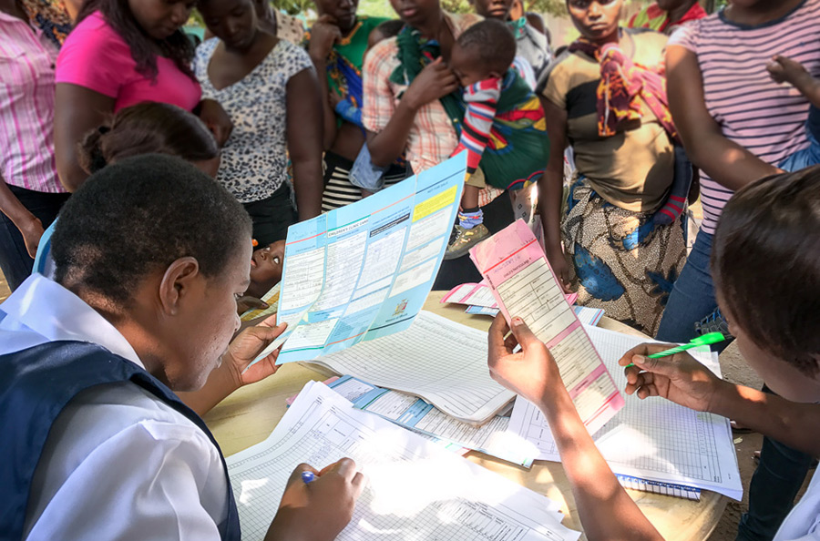

The Better Immunization Data (BID) Initiative, led by PATH, is an initiative to improve the availability and accessibility of quality data regarding immunizations, which will lead to better decisions by health workers; and ultimately better health outcomes. With funding from The Bill & Melinda Gates Foundation, the BID Initiative, in partnership with the Zambian government, chose OpenSRP as the platform of choice to deploy a digital vaccination register solution in Southern Province, Zambia. Southern Province is predominantly rural, with a population of about 1.8 million. There is limited internet connectivity and access to quality health services.
The Zambian health system is largely decentralized with governing committees at all levels (from the central to the community level). This system currently relies heavily on paper-based data systems, leading to a lack of field-level data visibility and the inability to track immunization defaulters. Furthermore, paper-based reporting is time-consuming, burdensome, and error-prone. At higher levels, immunization program managers lack the timely and quality data they need to better inform their decision-making and allocation of resources. ZEIR helps to eliminate the paper data entry and reporting burdens in the health system.
Although digital register solutions have been introduced before, they were unable to meet the needs of the Zambian Ministry of Health and their health workers and have not been able to scale. Since ZEIR was first introduced in an initial pilot in early 2017, the feedback from the health workers has been extremely positive. They recognize that ZEIR makes their work easier by automating their tallying and report generation; they also appreciate how ZEIR makes it easy for them to look up the records of children and record their vaccinations. This electronic data entry and reporting also increases the accountability of the health workers and adds a level of transparency to immunization data in the country that can lead to improved decision-making and health outcomes.
Since ZEIR has been deployed, over 32,000 children have been registered and over 324,000 vaccinations given (as of November 2017). These numbers will continue to grow as ZEIR scales to all of Southern Province in early 2018. For more information, please visit the PATH blog.